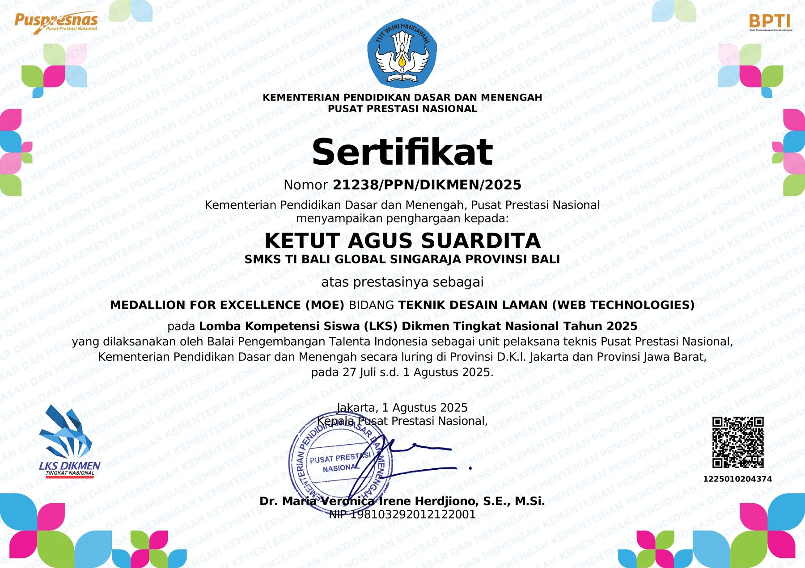

Sertifikat Kompetisi · Tingkat Nasional
Medallion For Excellence — LKS Dikmen Nasional 2025
Medallion For Excellence (MOE) bidang Teknik Desain Laman (Web Technologies), diberikan Pusat Prestasi Nasional pada Lomba Kompetensi Siswa (LKS) Dikmen Tingkat Nasional 2025.
PENYELENGGARA
Pusat Prestasi Nasional, Kementerian Pendidikan Dasar dan Menengah
TANGGAL
27 Juli – 1 Agustus 2025
JENIS
Kompetisi Nasional
NOMOR SERTIFIKAT
21238/PPN/DIKMEN/2025

Tentang pencapaian ini
LKS (Lomba Kompetensi Siswa) Dikmen adalah kompetisi keterampilan siswa SMK tingkat nasional yang diselenggarakan Kementerian Pendidikan Dasar dan Menengah lewat Pusat Prestasi Nasional. Medallion For Excellence bidang Web Technologies ini saya terima setelah lolos dari seleksi provinsi, dalam pelaksanaan yang berlangsung 27 Juli sampai 1 Agustus 2025 di Provinsi DKI Jakarta dan Jawa Barat.